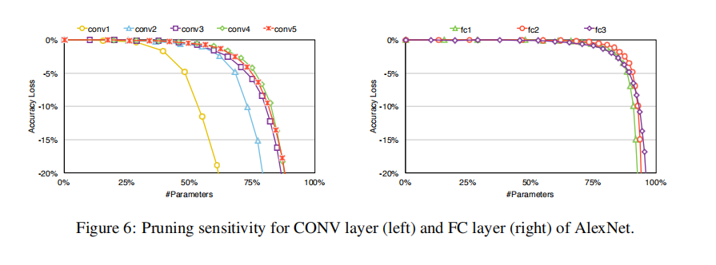

剪枝
对神经网络的权重及激活值进行稀疏化的常见方法就是剪枝。剪枝过程中满足剪枝标准的权重会被赋值为零，确保这些被“剪掉” 的元素不会参与反向传播过程。
神经网络中的权重，偏置，激活值都可以视为被剪的对象。然而偏置的数量少且对每一层的输出影响较大，故没必要剪。
稀疏度(sparsity)
稀疏度用来度量向量中零有多少，若向量中大多数元素都是零，可视为稀疏的。L0正则函数常被用来测量一向量中零元素的多少,既

当且仅当某一项为零时它对整体的贡献才为零。
在distiller这个库中可以使用distiller.sparity 来获取pytorch向量的稀疏度。
什么是权重剪枝(weights pruning)
权重或模型剪枝是网络中权重稀疏度的一种方法，通常情况下parameters指的是权重及偏置向量，因为相较于权重，模型中的偏置变量很少，不值得考虑。
剪枝需要选择一个标准来决定‘剪掉’谁–剪枝标准。最常见的剪枝标准就是绝对值。将某一权重变量的绝对值与选定的阈值比较，若小于阈值则被值为零(被剪掉),在distiller库中可以使用distiller.MagnitudeParameterPruner 类。根据就是，绝对值小的权重对于最终的输出结果贡献不大，故不太重要可以被减去。
模型可以被剪枝的另外一个原因是，模型通常是过参的，有很多冗余的参数及特征，因此一部分冗余可以通过将权重设为零被移除。
考虑模型剪枝的另外一个角度是，寻找一组包含尽可能多的零的权重，并且相较于原模型的精度仍可接受。可以想象参数空间的维度非常高，在这个很高维的解周围可能存在某些稀疏解，我们就是想找出这些稀疏解。
剪枝步骤(schedule)
最直接的方式就是对训练过的模型剪一次，也称’one-shot pruning’ 在[ Learning both Weights and Connections for Efficient Neural Networks这篇文章中，韩松等人提到”free lunch“的效果，–在没有retrain和损失精度的条件下，可以将connections降至原来的1/2.
同时指出，在prunning之后再retrain可以得到更好的结果，也就是循环剪枝(iterative pruning),retrain的步骤称为fine-tuning。每回合的剪枝标准，回合数，剪枝频率，剪掉谁–>统称为剪枝规划(pruning schedule)。循环剪枝也就是根据criteria去除掉那些不重要的元素，然后通过retrain调整剩余的权重，将模型精度恢复到原模型的水平。
何时停止剪枝，也根据具体的剪枝算法写在了schedule中。比如要实现某一目标稀疏度，当达到此稀疏度将会停止剪枝。或这根据所需的计算量等其他条件。
剪枝粒度(granularity)
将单个权重作为剪枝单位称为element-wise pruning， 或fine-grained pruning。
粗粒度的剪枝通常为结构性剪枝，如通道剪枝(channel), 核(filter).
敏感度分析(sensitivity)
通过剪枝引入稀疏度的一大难点是，在每一层中怎样决定阈值(threshold)或稀疏度。敏感度分析是一种根据向量的敏感度进行排序再剪枝的方法。
具体是在特定层设定剪枝比例，进行一次剪枝操作后，在测试数据集上进行一次精度评估。在所有的含参层都进行同样的操作，每一层实验多个不同的剪枝比例。找出适合于每层的剪枝比例。
我们想要模型在达到最高进度水平后，对某一层进行剪枝操作对整体性能的影响。
当然在进行结构性剪枝时，我们也能对整体结构进行敏感度分析。
在韩松等人的那篇论文中同样进行了element-wise 敏感度分析，结果如下图

在AlexNet中卷积层对于剪枝更敏感，并且随着层次加深敏感度降低。同时，全连接层更加不敏感，很好，因为网络中的大多数参数都存在于全连接层之中。